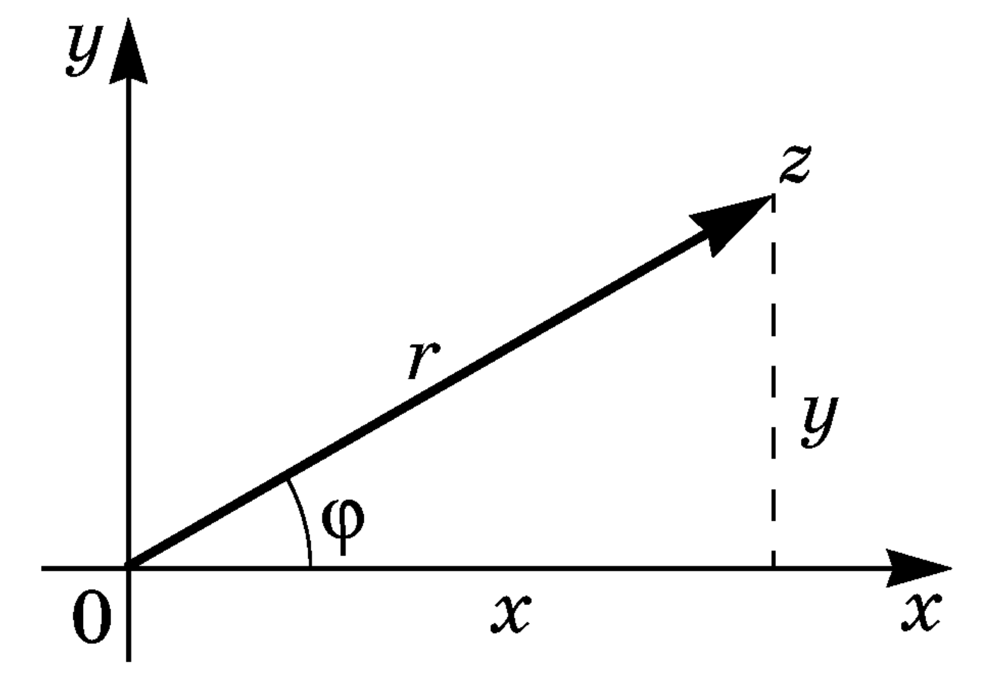

Комплексными числами называют выражения вида
\[
z = x + iy, \qquad i = \sqrt{-1}, \quad x,y \in \mathbb{R}.
\]
Элемент $i$ называют мнимой единицей.
Число $x$ называют действительной частью, $y$ — мнимой частью комплексного числа $z = x + i y$. Используют запись: \[ x = \Re z, \qquad y = \Im z. \]
Число $x$ называют действительной частью, $y$ — мнимой частью комплексного числа $z = x + i y$. Используют запись: \[ x = \Re z, \qquad y = \Im z. \]
Обозначение $z = x + iy$ называют алгебраической записью комплексного числа.
Число $\sqrt{x^2 + y^2}$ называют модулем комплексного числа $z = x + iy$
и обозначают как $\abs{z}$, то есть
\[
\abs{z} = \sqrt{x^2 + y^2}.
\]
Геометрически число $z = x + iy$ можно представить в виде точки $(x,y)$.

Координатная плоскость, точка $(x,y)$ которой поставлена в соответствие числу
$x + iy$, называется комплексной плоскостью и обозначается $\mathbb{C}$.
Ось $Ox$ при этом называют действительной, а $Oy$ — мнимой осью.
Угол $\varphi$ называется аргументом комплексного числа $z \neq 0$ и обозначается как
$\Arg z$. Значения $-\pi \leqslant \varphi \leqslant \pi$ обычно обозначают $\arg z$.
Пусть $\abs{z} = r$, тогда \[ \begin{aligned} x &= r \cos \varphi, \\ y &= r \sin \varphi, \end{aligned} \] поэтому \[ z = x + iy = r (\cos \varphi + i \sin \varphi). \]
Запись $z = r (\cos \varphi + i \sin \varphi)$ называют
тригонометрической формой комплексного числа $z$.
В случае, когда $z = 0$, считают, что $r = 0$, а $\varphi$ может
принимать любые значения — аргумент нуля не определён.
Комплексные числа $z_1 = x_1 + iy_1$ и $z_2 = x_2 + iy_2$ считаются равными тогда и только тогда, когда $x_1 = x_2$ и $y_1 = y_2$.
Сумма комплексных чисел $z_1 = x_1 + i y_1$ и $z_2 = x_2 + i y_2$
определяется как
\[
z_1 + z_2 = (x_1 + x_2) + i (y_1 + y_2).
\]
Разность же определяется как \[ z_1 - z_2 = (x_1 - x_2) + i (y_1 - y_2). \] Геометрически эти операции соответствуют сложению и вычитанию векторов.
Разность же определяется как \[ z_1 - z_2 = (x_1 - x_2) + i (y_1 - y_2). \] Геометрически эти операции соответствуют сложению и вычитанию векторов.
Произведение двух комплексных чисел $z_1 = x_1 + i y_1$ и $z_2 = x_2 + i y_2$
определяется по формуле
\[
z_1 z_2
= (x_1 + i y_1) (x_2 + i y_2)
= (x_1 x_2 - y_1 y_2) + i (x_1 y_2 + y_1 x_2).
\]
В тригонометрической форме:
\[
z_1 z_2 = r_1 r_2 \left[
\cos(\varphi_1 + \varphi_2) + i \sin (\varphi_1 + \varphi_2)
\right].
\]
Методом математической индукции можно доказать, что справедлива
формула Муавра:
\[
z^n = r^n (\cos n \varphi + i \sin n \varphi).
\]
Число $\overline{z} = x - iy$ называют сопряжённым
к числу $z = x + iy$.
Деление определяется по формуле
\[
\frac{z_1}{z_2}
= \frac{x_1 x_2 + y_1 y_2}{x_2^2 + y_2^2}
+ i \frac{y_1 x_2 - x_1 y_2}{x_2^2 + y_2^2}.
\]